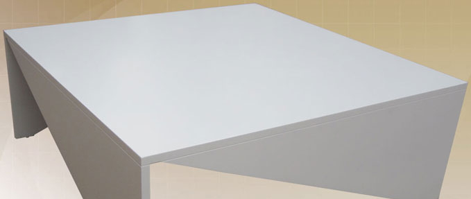
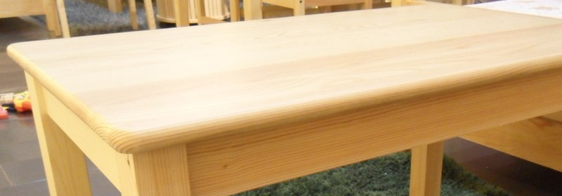
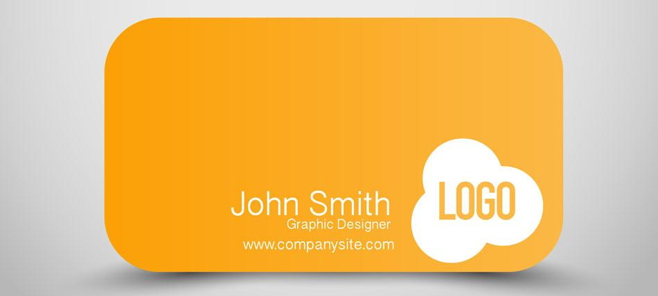
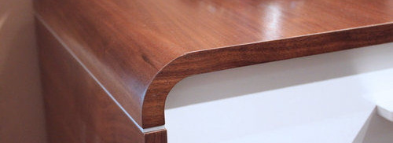
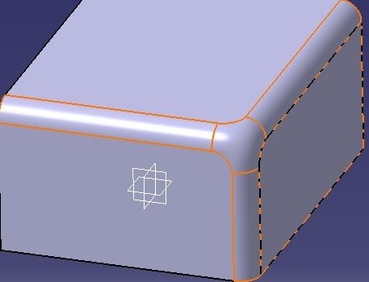

小麦草
一株漂泊的小麦草
极简
如无必要，勿增实体
minimalism lifestyle
硬装
minimalism lifestyle
配色
less is more

哑光白

浅原木色
墙面漆
哑光白
白板漆(可涂鸦)
布线
minimalism lifestyle
电线
每个房间都至少有四个插口
厨房墙面有五个插口
房顶中心有一个插口
插口平面与墙面齐平
网络
每个房间都至少有四个接口
所有房间互联
房顶中心有一个网线插口
6类屏蔽双绞线
交换机房
软装
minimalism lifestyle
灯具
基本几何形式(矩形/方形/圆形)
智能
可调节
夜灯
储物柜
相同宽度
模块隔板
分立/墙体两种
沙发
模块拼接
细节
less is more

圆角设计1

圆角设计2

圆角设计3
方形设计
矩形设计
圆形设计
平直的设计